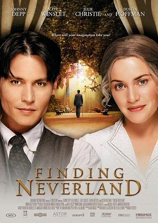

寻找梦幻岛 / Finding Neverland
又名：不老的传说 / 寻找新乐园 / 小飞侠前传之魔幻童心
Finding Nevernland 音乐圈粉
作品信息
| 导演 | 马克·福斯特 |
| 编剧 | 大卫·麦基 / Allan Knee |
| 主演 | 约翰尼·德普 / 凯特·温斯莱特 / 达斯汀·霍夫曼 / 弗莱迪·海默 / 朱莉·克里斯蒂 / 拉达·米切尔 / 伊恩·哈特 / 凯特·马伯里 / 凯莉·麦克唐纳 / 麦肯锡·克鲁克 / 托比·琼斯 |
| 类型 | 剧情 / 家庭 / 传记 |
| 制片国家/地区 | 美国 / 英国 |
| 语言 | 英语 |
| 上映日期 | 2004-09-04(威尼斯电影节) / 2004-11-12(美国) |
| 片长 | 106分钟 / 101分钟(DVD) |
| IMDb | tt0308644 |
说过什么
2021-01-12 11:56:01
广播 · 想看
Finding Nevernland 音乐圈粉
最后一次看到是 2026-08-01T11:09:08+10:00 · 豆瓣原页